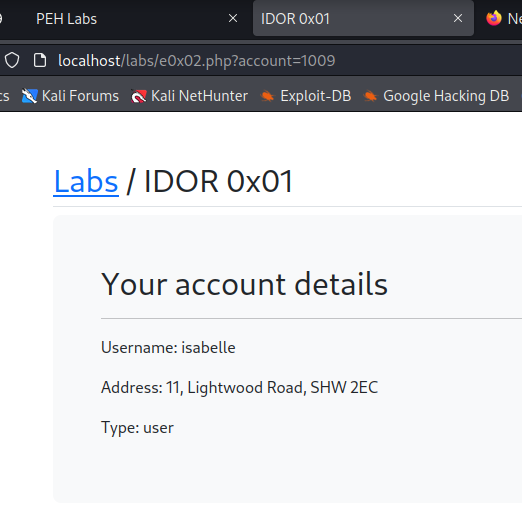

Essentially it's an access control issue where we can request a resouce with an object id and it returns some information of that object.
Examples of object id's are things like user ids, product IDs etc.
And this vulnerablity is fairly trivial to find and exploit and we actually see a lot of API driven applications though in that situation we actually call it BOLA (i.e. broken objects level authorization.)
So BOLA and IDOR are basically the same vulnerability.
If we only the lab this is the output get:

The easiest way to test for IDOR is essentially find a point where you're able to manipulate an object's ID and than simply change it.
Will make a file name num.txt using python command from number 1 to 2001
python3 -c "for i in range (1,2001): print(i)" > num.txt

Now will simply pass the num.txt file through the URL using the FFUF and filter using size we get less entries as output which is good as earlier we were getting false positive.
ffuf -u "http://localhost/labs/e0x02.php?account=FUZZ" -w num.txt -fs 849

What is we use grep we will get output in a more formated way

I made the one lines script but it needs some if and else to get add in the output.
┌──(kali㉿kali)-[~/Downloads/labs/user-content]
└─$ for i in `cat $file`;do curl -v --silent http://localhost/labs/e0x02.php?account="$i" 2>&1 | grep Type + echo "$i">> put.txt;done;

Let's try with BurpSuite
Will load the num.txt as the payload in the intruder and attack will be sniper.

Length 1131 is for No account information found
Length 1179 is for admin account